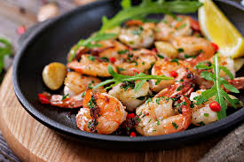

Zesty Garlic Shrimp
"Shrimp are just tiny sea-warriors waiting to be dipped in butter. Don't keep them waiting."

Ingredients
- 1lb Large shrimp (peeled)
- 4 Cloves of garlic (or 10, I don't judge)
- Fresh Lemon juice
- Red pepper flakes
- Butter and Olive Oil
Step-by-Step Instructions
- Heat oil and butter in a pan until it starts to shimmer like the summer sun.
- Add garlic and red pepper flakes. Sauté for 1 minute until your kitchen smells like heaven.
- Add shrimp. Cook until they turn pink and curl into a 'C' shape. 'C' stands for 'Chef Altamash'.
- Squeeze half a lemon over the pan.
- Serve immediately with crusty bread.